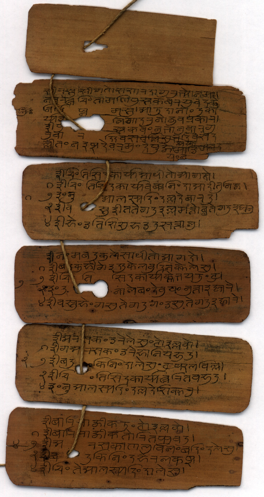
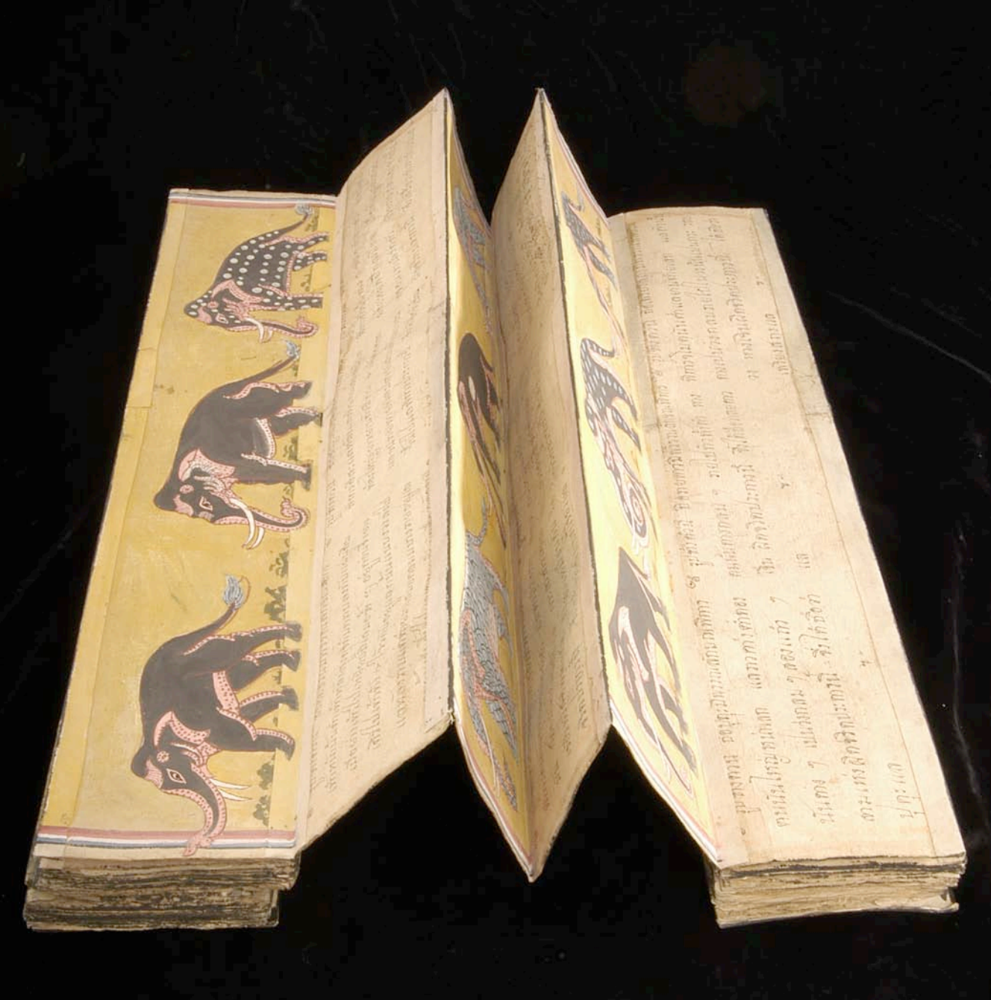
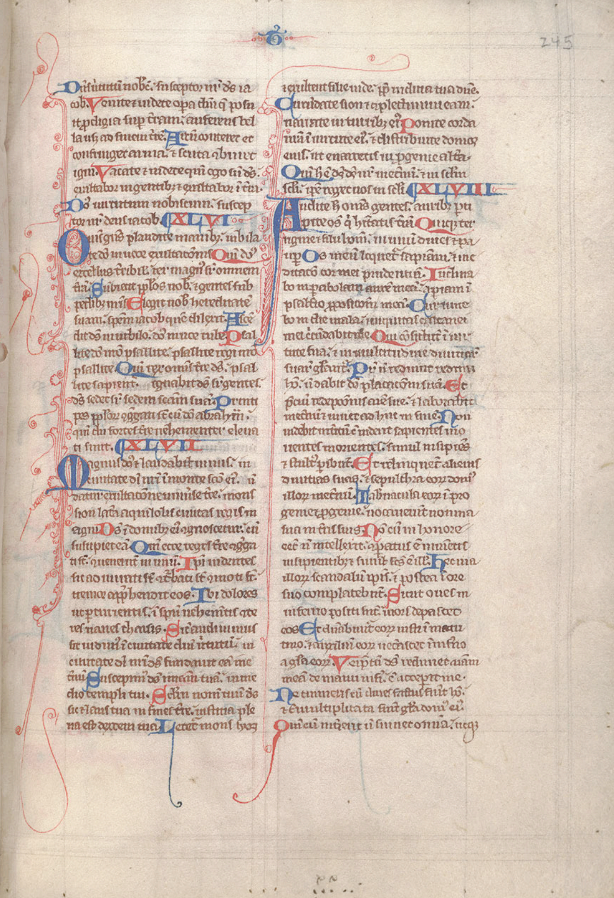
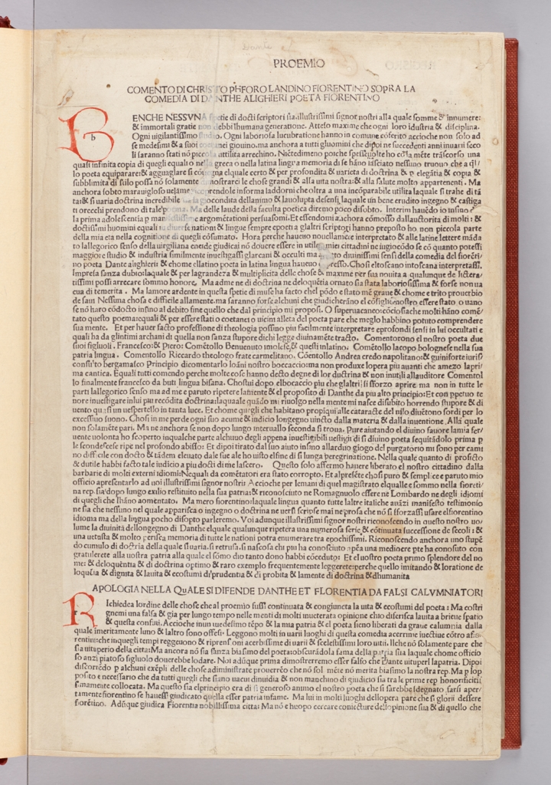
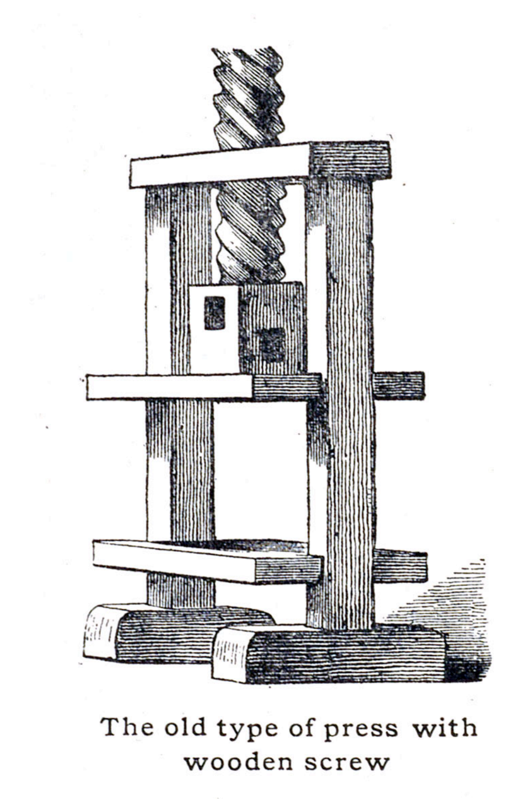

class: middle # Visual Appearance of the Book <hr> ### Matthew J. Lavin ### Clinical Assistant Professor of English and Director of Digital Media Lab ### University of Pittsburgh ### September 2017 --- class: middle # Indian palm leaf format <hr>  From "An Indic Palm-leaf Manuscript," http://library.columbia.edu --- class: middle # Tibetan Pecha format <hr> ### The Adirondack Sutra <pre>http://digitalcollections.stlawu.edu/collections/adirondack-sutra</pre> --- class: middle # Accordion book <hr> #### Thai accordion-style book, HRC Eastern Manuscripts Collection  <pre>From "The World Beyond," http://www.hrc.utexas.edu/educator/modules/gutenberg/books/world/</pre> --- class: middle # Korean type <hr> #### 18th century, HRC Eastern Manuscripts #47 <pre>From "The World Beyond," http://www.hrc.utexas.edu/educator/modules/gutenberg/books/world/</pre> --- class: middle # European Manuscripts <hr> #### 13th Century Bible from England  <pre>http://www.hrc.utexas.edu/educator/modules/gutenberg/books/before/</pre> --- class: middle # Incunabula <hr>  <pre> From "Illustrations from Early Printed Editions of the Commedia," https://digitaldante.columbia.edu/image/digitized-images/</pre> --- class: middle # Gutenberg <hr>  <pre>From "Adapting Technology," hrc.utexas.edu/educator/modules/gutenberg/invention/adapting/</pre> --- class: middle ## Quantification: Focused Free-write <hr> ### Use a sheet of paper or your laptop to write 1-2 paragraphs. <hr> - #### What is your topic or question for the timeline essay? - #### In what ways can this subject be quantified, or informed by quantification? - #### What are some of the limits of quantification that apply to your topic